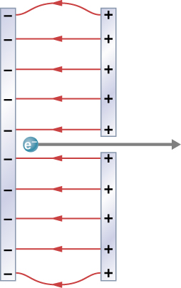

Phy 222 Homework 4: Electric Potential
Problem 4.1
Consider a charge \(Q_1 (+5.0 \, \mu\text{C})\) fixed at a site with another charge \(Q_2\) (charge \(+3.0 \, \mu\text{C}\), mass \(6.0 \, \mu\text{g}\)) moving in the neighboring space.
- Evaluate the potential energy of \(Q_2\) when it is \(4.0 \, \text{cm}\) from \(Q_1\).
- If \(Q_2\) starts from rest from a point \(4.0 \, \text{cm}\) from \(Q_1\), what will be its speed when it is \(8.0 \, \text{cm}\) from \(Q_1\)? (Note: \(Q_1\) is held fixed in its place.)
Problem 4.2
What is the strength of the electric field between two parallel conducting plates separated by \(1.00 \, \text{cm}\) and having a potential difference (voltage) between them of \(1.50 \times 10^4 \, \text{V}\)?
Problem 4.3
An evacuated tube uses an accelerating voltage of \(40 \, \text{kV}\) to accelerate electrons to hit a copper plate and produce X-rays. What would be the maximum speed of these electrons (ignoring relativistic effects)?
Problem 4.4
If the potential due to a point charge is \(5.00 \times 10^2 \, \text{V}\) at a distance of \(15.0 \, \text{m}\), what are the sign and magnitude of the charge?
Problem 4.5
Find the potential at points \(P_1\), \(P_2\), \(P_3\), and \(P_4\) in the diagram due to the two given charges.
Problem 4.6
In a particular region, the electric potential is given by \(V = -xy^2z + 4xy\). What is the electric field in this region?
Problem 4.7
Two very large metal plates are placed \(2.0 \, \text{cm}\) apart, with a potential difference of \(12 \, \text{V}\) between them. Consider one plate to be at \(12 \, \text{V}\), and the other at \(0 \, \text{V}\).
- Sketch the equipotential surfaces for \(0 \, \text{V}\), \(4 \, \text{V}\), \(8 \, \text{V}\), and \(12 \, \text{V}\).
- Next, sketch in some electric field lines, and confirm that they are perpendicular to the equipotential lines.
Problem 4.8
A metallic sphere of radius \(2.0 \, \text{cm}\) is charged with \(+5.0 \, \mu\text{C}\), which spreads uniformly on the surface of the sphere. The metallic sphere stands on an insulated stand and is surrounded by a larger metallic spherical shell, with an inner radius of \(5.0 \, \text{cm}\) and an outer radius of \(6.0 \, \text{cm}\). A charge of \(-5.0 \, \mu\text{C}\) is placed on the inside of the spherical shell, spreading uniformly on its inner surface. Assuming the potential is zero at infinity, determine:
- The potential of the spherical shell.
- The potential of the sphere.
- The potential in the space between the two.
- The potential inside the sphere.
- The potential outside the shell.
Problem 4.9
The surface charge density on a long straight metallic pipe is \(\sigma\). What is the electric potential outside and inside the pipe? Assume the pipe has a diameter of \(2a\).
Problem 4.10
A simple and common technique for accelerating electrons is shown in Figure 7.46, where there is a uniform electric field between two plates. Electrons are released, usually from a hot filament, near the negative plate, and there is a small hole in the positive plate that allows the electrons to continue moving.
- Calculate the acceleration of the electron if the field strength is \(2.50 \times 10^4 \, \text{N/C}\).
- Explain why the electron will not be pulled back to the positive plate once it moves through the hole.

Problem 4.11
Membrane walls of living cells have surprisingly large electric fields across them due to the separation of ions. What is the voltage across an $8.00 \, \text{nm}$-thick membrane if the electric field strength across it is \(5.50 \, \text{MV/m}\)? Assume a uniform electric field.
Problem 4.12
A lightning bolt strikes a tree, moving \(20.0 \, \text{C}\) of charge through a potential difference of \(1.00 \times 10^2 \, \text{MV}\).
- What energy was dissipated?
- What mass of water could be raised from \(15^\circ \text{C}\) to the boiling point and then boiled by this energy?
- Discuss the damage that could be caused to the tree by the expansion of the boiling steam.
Problem 4.13
A battery-operated car uses a \(12.0 \, \text{V}\) system. Find the charge the batteries must be able to move in order to:
- Accelerate the \(750 \, \text{kg}\) car from rest to \(25.0 \, \text{m/s}\),
- Make it climb a \(2.00 \times 10^2 \, \text{m}\) high hill, and
- Cause it to travel at a constant \(25.0 \, \text{m/s}\) while climbing with a \(5.00 \times 10^2 \, \text{N}\) force for an hour.
\(~\)